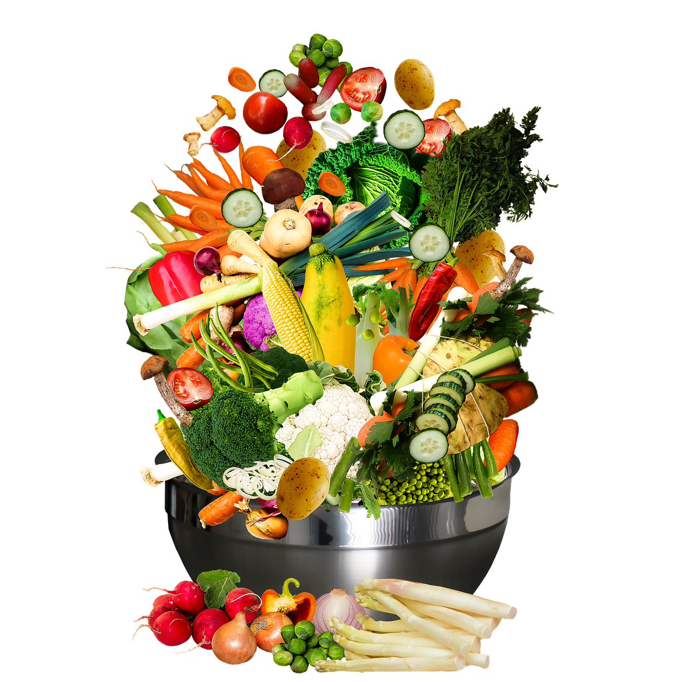

About web!
요리제작소
: 자취를 하거나 요리초보자를 위한 웹서비스입니다.
다양한 식재료를 추가하여 검색해보세요!

주된 기능은 가지고 있는 식재료를 조합하여 활용할 수 있는
요리를 자동적으로 검색해주는 것입니다.
자기의 요리 레시피를 이용자들에게 공유해보세요!
재료의 활용도를 높일 수 있도록 도와줍니다.
음식물의 배출을 줄일 수 있고
요리에 대한 흥미가 생길 것입니다!


 음식물의 배출을 줄일 수 있고
음식물의 배출을 줄일 수 있고